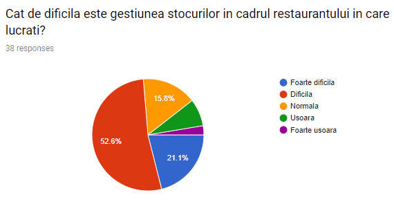
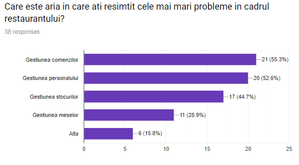
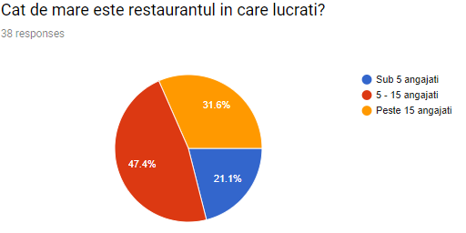
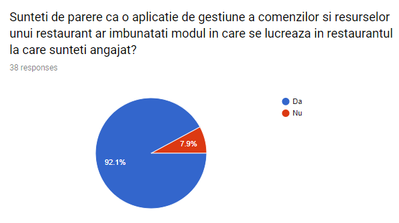

Milestone 2
Problem identification
We found that businesses have a problem in optimizing costs and in interpreting revenue results. Their lack of financial knowledge is understandable. In order to make their life easier we come with this idea of business analytics tools can offer them a better understanding of how they can manage their goods.
Our solution
The solution proposed by us is an application that facilitates the management of the human and material resources of a restaurant and which also allows the management of restaurant orders. The application can be customized according to the client's needs, from the menu structure all the way to the tables arangement within a restaurants.
Customer discovery
The main customer segment that we are targeting consists of small and medium business like shops and restaurants. So, we decided to create two online forms with some relevant questions to collect feedback from cusomers of restaurant and the second one from resturants administrators and workers and to discover what they think about our solution and to discuss directly with our colleagues and friends about our idea to see if they are interested or not.
Also, we contacted some restaurants administrators to see if they are willing to use our solution. So, we sent some emails in which we described our idea.
And we also used the vast knowledge our partener, Aristarch Software, has in this field.
Information from our customer segment
For customers of the restaurants we targeted normal people who go to restaurant and we approached most of them via online questionnaires.
We asked people who were in online groups with a lot of students or mature people to distribute our questionnaire. We asked around 80 people about how frecquently they go to restaurants and more than 65% voted that they go often.
You can acces our first formular here.


We decided to share also an form with the clients that Aristarch Software has to quantify the opinion of people regarding restaurants industry services. The questions from the form helped us to convience ourselves of the problems regarding the restaurants industry services that stay at the foundation of our project. You cand see all our questions in the form here.    
How these insights have affected our produc
From the form sent to the restaurant employees, it was found that the areas in which the management is carried out with difficulty are: order management (55.3%), personnel management (52.6%) and inventory management (44.7%). These results show that in about half of the restaurants there are management problems in these areas. Thus, we decided, based on these results, that our project must focus in particular on how these three problems can be reduced, and the result of our project will thus be a specialized IT solution on optimizing and facilitating the management of orders, personnel and stock
Do you consider that you are ready to move to the Customer Validation stage?
Until now, we discussed about the idea, if it resolves an actual problem that many people face with it and the answers of interviewed people was positive. So, we think that we are ready to move to the Customer Validation stage to discover if the potential customers consider that our solution is useful and to see if they want to support our idea. We contacted some potential customers, and we are waiting for feedback, but we need more than one to decide if our idea can be validated or not. We will continue to contact the potential customers, to obtain more points of view about our idea.